This Month in Rust GameDev #22 - May 2021
Welcome to the 22nd issue of the Rust GameDev Workgroup's monthly newsletter. Rust is a systems language pursuing the trifecta: safety, concurrency, and speed. These goals are well-aligned with game development. We hope to build an inviting ecosystem for anyone wishing to use Rust in their development process! Want to get involved? Join the Rust GameDev working group!
You can follow the newsletter creation process by watching the coordination issues. Want something mentioned in the next newsletter? Send us a pull request. Feel free to send PRs about your own projects!
- Game Updates
- Learning Material Updates
- Engine Updates
- Tooling Updates
- Library Updates
- Requests for Contribution
Rust GameDev Meetup

The fifth Rust Gamedev Meetup happened in May. You can watch the recording of the meetup here on Youtube. The meetups take place on the second Saturday every month via the Rust Gamedev Discord server, and can also be streamed on Twitch. If you would like to show off what you've been working on in a future meetup, fill out this form.
Game Updates
Flesh
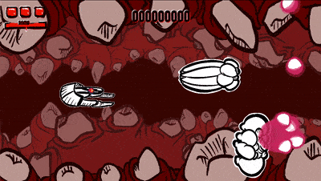 a new enemy
Flesh by @im_oab is a 2D-horizontal shmup game with hand-drawn animation and organic/fleshy theme. It is implemented using Tetra. This month's updates include:
- Add (internal use) level editor.
- Add new enemy types.
- Prepare to release a short demo next month for collecting feedback.
Veloren
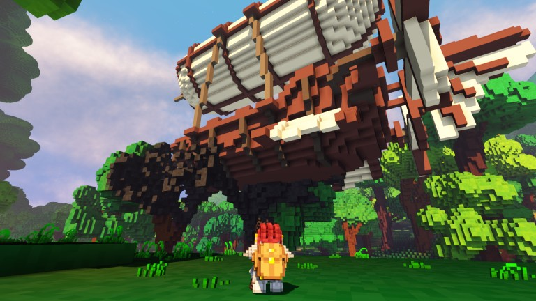 The beginning of an exciting journey
Veloren is an open world, open-source voxel RPG inspired by Dwarf Fortress and Cube World.
Veloren's 3rd birthday was at the end of May, on the 25th! During the month, lots of systems were overhauled. Music changes were made to only play certain tracks in certain areas. Econsim was optimized, and many bugs were fixed. The minimap was overhauled, with many quality-of-life and visual improvements. Terrain compression speed was worked on, with many trials of different compression techniques.
The large physics overhaul was merged, and lots of patches are being added to issues that popped up from it. You can see a small flight in action here. Dungeons have been balanced, and many weapons have also seen changes. In June, 0.10 will be released.
May's full weekly devlogs: "This Week In Veloren...": #118, #119, #120, #121, #122.
A/B Street
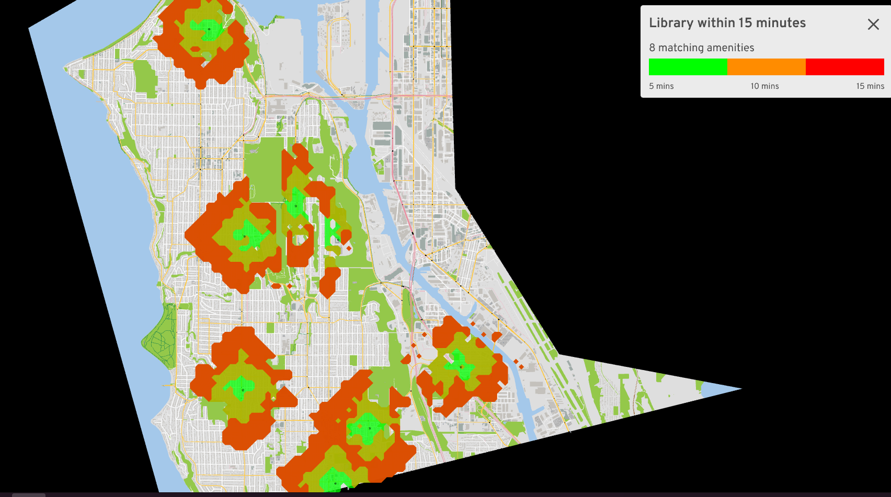
A/B Street by @dabreegster is a traffic simulation game exploring how small changes to roads affect cyclists, transit users, pedestrians, and drivers, with support for any city with OpenStreetMap coverage. The project aims to engage more citizens with transportation planning, letting people advocate for real changes they want to see.
In May, travel time stopped being the only "score" for how well road changes work. Risk exposure of cyclists crossing dangerous intersections or travelling in front of high-speed traffic is now measured, with lots of data visualization work by Michael. Trevor also revived the 15-minute isochrone tool, finding areas of a city without easy access to education, hospitals, or other facilities. We also moved the map import process, with over 100 supported maps, to the cloud from a single poor laptop. OpenStreetMap importing now handles multiple turn lanes, U-turns, and stop signs much better.
The Process
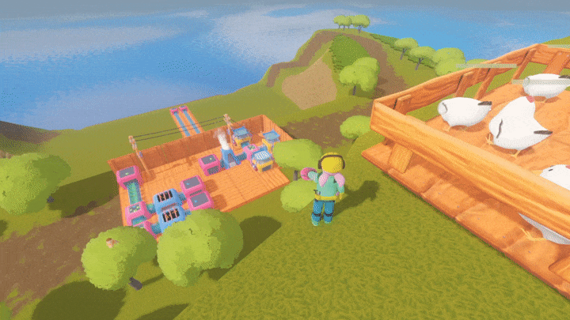 This factory has never looked livelier!
The Process by @setzer22 is an upcoming game about factory building, process management and carrot production, built with Rust using the Godot game engine!
This month has been focused on improving the game's UI and extending the machine logistics system, but there was also room for a few cosmetic improvements:
- Improved visualization of connections in the logistic network.
- Implemented configurable filters for machines to build a sorting machine!
- New materials and terrain shader.
- Trees and dynamically updating grass using instanced rendering.
Discussions: /r/rust_gamedev, Twitter
pGLOWrpg
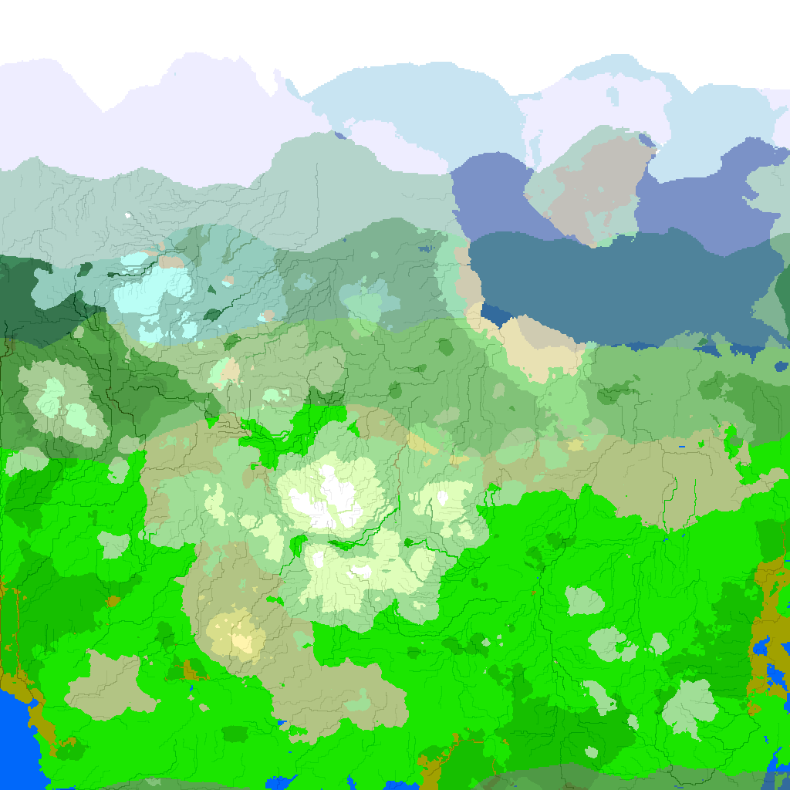
pGLOWrpg by @Roal_Yr is a Procedurally Generated Living Open World RPG, a long-term project in development, which aims to be a narrative text-based game with maximum portability and accessibility.
Recent updates include:
- Implemented dev features test arena.
- Implemented entity system draft.
- Sanitized coordinate systems everywhere (ooof!)
- Much refactoring.
- Resumed river generation development.
Discussions: Twitter
Project YAWC
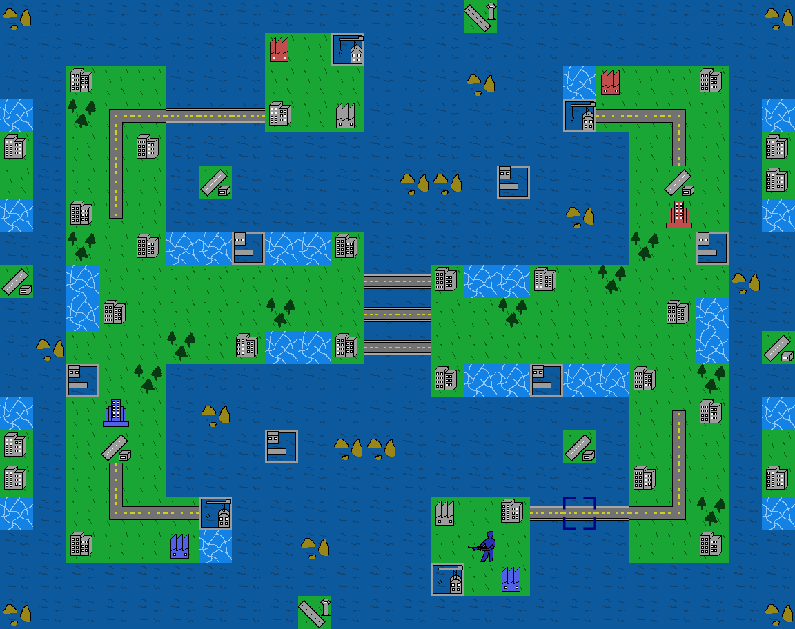
Project YAWC (Twitter) is a turn-based strategy game built in GGEZ, being developed by junkmail.
May saw the release of Alpha 5.4, including interface improvements, balance changes, new units, new maps, and netcode improvements.
An alpha access request form is available, if you want to try it out.
Bounty Bros.
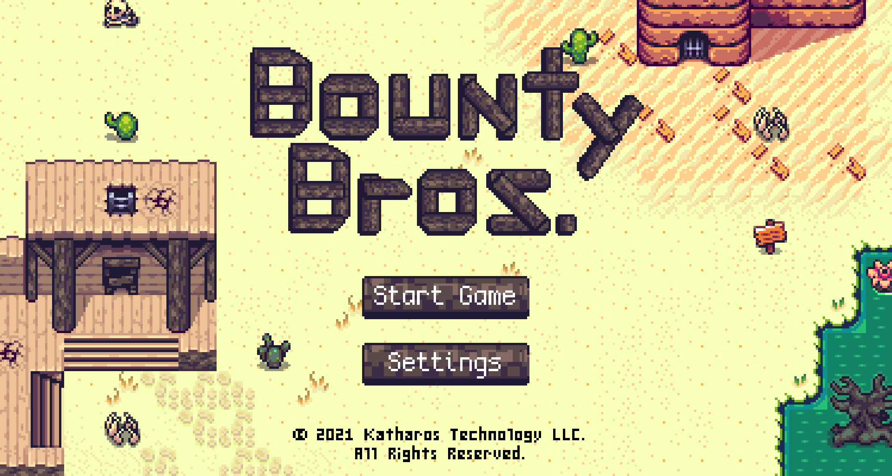 Click the image to play the game in your browser!
Bounty Bros. is a prototype game, similar to the old Legend of Zelda® games, developed by Katharos Technology as a testing ground for a future commercial game.
The last two months of development was primarily focused on sound and user interface:
- Music will play in different areas of the map and fade in when walking into an area with different music.
- In-game UI is now functional including a new start menu and a simple settings menu to toggle the CRT filter and pixel aspect ratio.
- The web player now has a simple loading icon instead of a solid black screen.
The web version was re-built and published under a new link so you can try it in your browser.
You can read the full update in the Blog Post.
Harvest Hero & Harvest Hero Origins
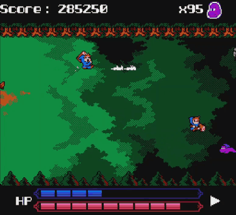
Harvest Hero is currently on hold for now. After Gemdrop Games was formed, it was decided that Emerald needed to be tested to ensure it can withstand cross publishing. This means creating a smaller game in the engine in order to figure out the publishing process for Steam, Itch, Nintendo Switch, and guarantee its viability.
This resulted in the birth of Harvest Hero Origins, a small wave defense arcade game with local co-op! Join the Gemdrop Games Discord to stay up to date with these games.
Features:
- Story Mode
- Survival Mode (with local co-op)
- Unlockable skins
- 2 unlockable playable characters
Outer Wonders
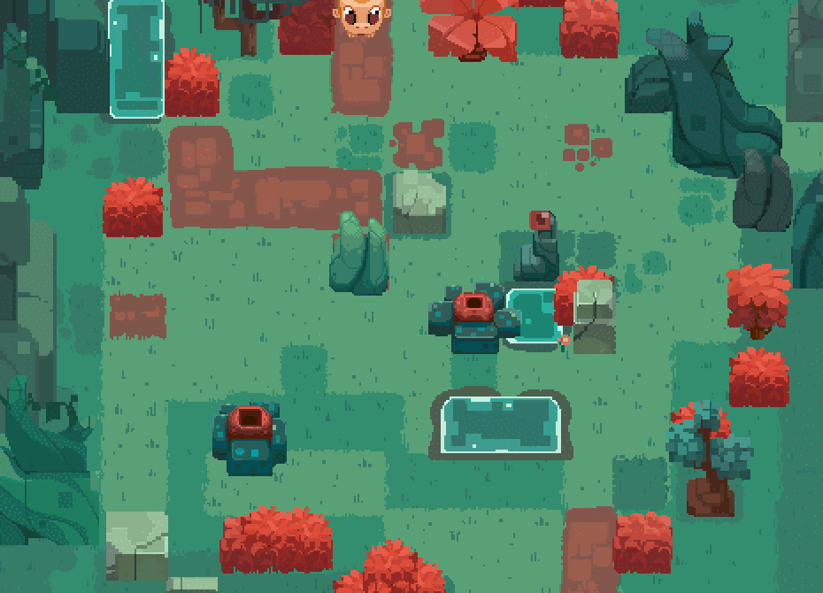
Outer Wonders is a colorful, pixel art, puzzle-based adventure game developed by Utopixel where you play as Bibi, a cute round monkey who enjoys rolling in straight lines. Explore a whimsical nature where altering the environment is key to progress, and solve puzzles to protect its wonders.
Outer Wonders can be downloaded for Linux and Windows from itch.io.
May was mostly dedicated to code cleaning, small improvements, as well as blogging and community building. Updates of the month include:
- Refactored UI code to streamline menu stacking and ease the implementation of an upcoming options menu.
- Added support for menu navigation using the D-Pad alongside the existing analog stick support.
- Published a blog post about building Outer Wonders for Linux/itch.io (english, french).
- Posted weekly puzzles #16, #17, #18 and #19 on social media for players wishing to give puzzles a try prior to downloading the game.
Discussions: /r/rust_gamedev, Hacker News
rpg-cli

rpg-cli by @facundoolano is a bare-bones JRPG-inspired terminal game. It can work as an alternative to cd where you randomly encounter enemies as you change directories. The game features:
- Character stats and leveling system.
- Automatic turn-based combat.
- Item and equipment support.
- 15+ enemy classes.
- Permadeath with item recovering.
- Run and bribe to escape battles.
Discussions: /r/rust_gamedev
Theta Wave
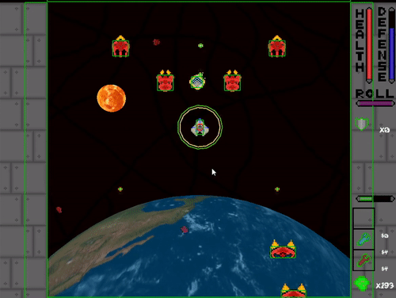 The Blast Repeller item pushes blasts away from the player
Theta Wave is an open-source space shooter game by developers @micah_tigley and @carlosupina. It is one of the showcase games for the Amethyst Engine. In the past month, the "Loot" update was released which enhanced how loot drops are rolled, spawned, and how their effects are applied to the game. The Loot Update also added an attraction system that allows for entities to repel or attract other entities.
Now an "Organization" update is in progress for Theta Wave. This update will divide Theta Wave into two workspaces; a library and a binary. This update will also add documentation comments for all of the library's features.
Engine Updates
Tetra
Tetra is a simple 2D game framework, inspired by XNA, Love2D, and Raylib. This month, versions 0.6.4 and 0.6.5 were released, featuring:
- Stencil buffers
- Basic instanced mesh rendering
- Methods for reading textures back to the CPU (e.g. for screenshots)
- Support for passing slices/arrays as shader uniforms
- More utility methods for working with high-DPI displays
- Various bug fixes and docs improvements
For more details, see the changelog.
Rustcraft
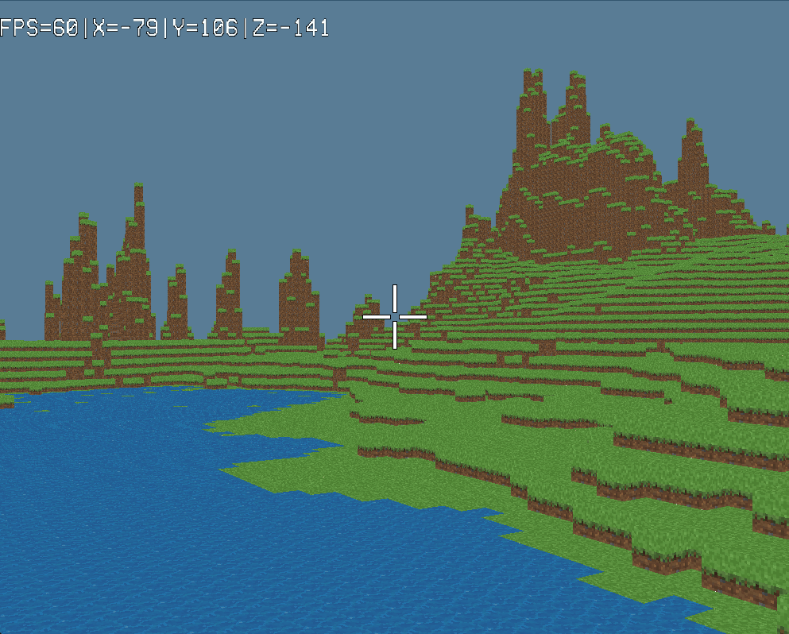
Rustcraft by @dskart is a simple Minecraft engine written in Rust using wgpu.
It handles infinite world generation using gradient noise as well as placing and breaking blocks.
rg3d

rg3d (Discord, Twitter) is a game engine that aims to be easy to use and provide a large set of out-of-box features. Some of the recent engine updates:
- Initial 2D support (with lighting and physics)
- Multi-layer terrains (check this video)
- Load balancer for texture uploader
- Customizable vertex format
- Instanced rendering fixes
- Menu items now can work without backing Menu widget
- Shadows fix for spotlights
- Selection improvements for Tree widget
- Continuous integration
- Basic Framework that hides engine initialization and game loop
- Performance improvements
- "Save" mode for FileSelector and FileBrowser widgets
- Various bug fixes and small improvements.
rusty-editor updates:
- Context menu for world outliner items
- Terrain editor
- Grid snapping for Move interaction mode
- Fixes for Move interaction mode in case of complex hierarchies
- Continuous integration
- Settings window refactoring + improvements
- Box selection mode bug fixes
Nestadia
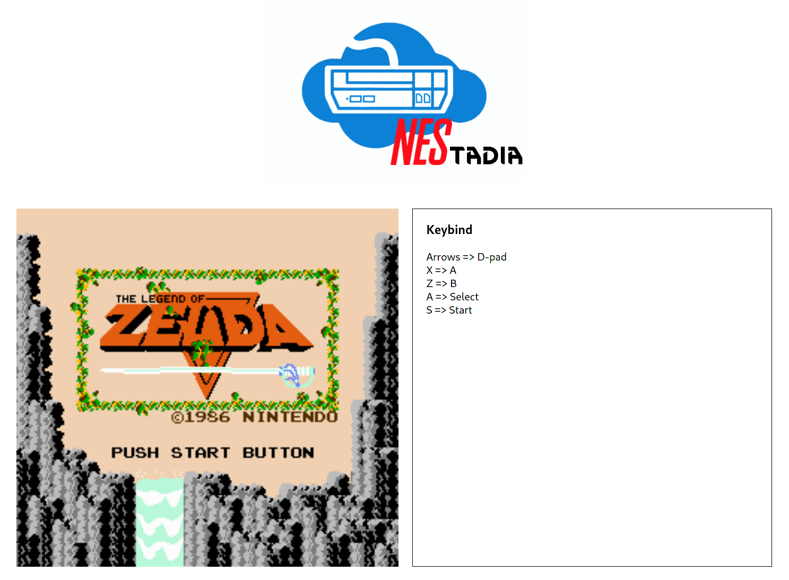
Nestadia by @zer0x64, @junior-n30 and @CBenoit is a server-based NES emulator.
Nestadia was written as a reverse engineering and memory exploitation challenge for NorthSec CTF 2021, a cybersecurity competition. Contestants were required to reverse-engineer the emulator and ultimately write a Tool Assisted Speedrun to run arbitrary code inside a provided ROM.
After the competition, the code was open-sourced and cleaned up to remove references to the competition. The developers intend on fixing more bugs and adding more features in the near future.
Some interesting features of this emulator are its server-based nature, and the no_std core which means that the emulator can be built and ran pretty much anywhere without much work.
Incoming improvements include online multiplayer, sound, a WASM port, porting to a libretro core, and using wgpu instead of sdl for the native GUI and debugger.
Learning Material Updates
Learn WGPU Updated to wgpu 0.8 and WGSL
After some GLSL issues trying to update the "Learn WGPU" tutorial
to version WGPU 0.8, @sotrh decided to migrate to WGSL.
This update was a lot of work, but relatively painless.
As a result, shaderc is no longer a dependency.
Checkout more at here.
Voxel Engine with Rust and wgpu-rs

@TanTanDev published a video about how he made a voxel engine written in Rust using wgpu.
Currently voxel rendering, chunk management, flying camera, and simple lightning is implemented. The source code is released on github.
Discussions: /r/rust_gamedev
1 Year of Rust Game Development
Another video by @TanTanDev is about the projects he made during his first year of learning Rust. He also talks about why he likes the Rust programming language and community.
Discussions: /r/rust_gamedev
LD48: Rusty MMO in 48 Hours

@kuviman wrote a devlog about his experience writing a video game in Rust.
He needed to make a game in just 48 hours for the Ludum Dare 48 (LD48) game jam, so he chose a simple theme: digging.
20 hours later, he had a full-fledged MMO - complete with hackers!
Discussion: r/rust_gamedev
State of Rust in Unreal Engine
This Reddit post discusses the current state of using Rust in the Unreal Engine. It concludes that although there are several ways that Rust could interact with the engine, all are still forced to use C++ to bootstrap these operations.
2048: Using an event system to reset the game
@chrisbiscardi published a video about using Bevy's event readers and writers to implement a reset game button for a 2048 clone.
The video walks through implementing a "reset game" UI button in Bevy 0.5 by taking advantage of Bevy's event system for reading and writing a ResetGameEvent. It also covers recursively despawning entities and sprites.
Discussion: Twitter
Tooling Updates
Graphite
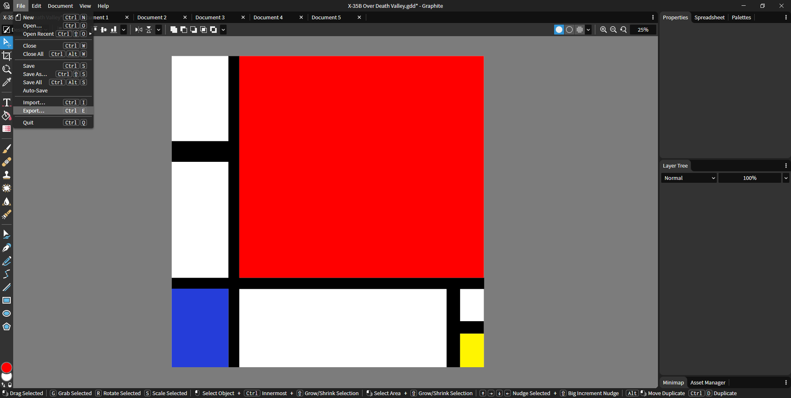 Piet Mondrian's artwork replicated in Graphite using the new color picker
Graphite (GitHub, Discord, Twitter) is an in-development vector and raster graphics editor built on a nondestructive node-based workflow.
In the past month, new frontend features have mostly closed the gap for a visually complete UI while a major Rust backend refactor took place.
A new frontend system for floating menus was added to draw menus over the UI, like dropdown menu input widgets and popovers to display the new color picker. Also, the application menu bar was built with working buttons for the new Undo and Export SVG actions.
A large refactor in the Rust backend created a simpler communication strategy between all components in the software stack and a standard method of handling user inputs.
Try it right now in your browser. Graphite is making rapid progress towards becoming a non-destructive, procedural graphics editor suitable for replacing traditional 2D DCC applications. Please join the Discord - and consider asking for a tour of the code and how you can help!
Library Updates
Dimforge

Dimforge creates open-source Rust crates for numerical simulation. Some of the recent updates:
- Rapier v0.9 brings user-defined storages, colliders not attached to any rigid-body, velocity-based kinematic bodies, and a lot of other improvements.
- bevy_rapier v0.10 was completely rewritten using the new user-defined storages to become significantly more ergonomic and "bevy-native" feel.
- New exhaustive user-guides for Rapier and bevy_rapier were written. They cover all the available features of Rapier, excepted details about implementing your own custom storage for colliders and rigid-bodies.
- The JS bindings for Rapier have been updated to use Rapier 0.9.
- nalgebra v0.26 and v0.27 got const-generics support and macros for constructing matrices/vectors/points in a convenient way.
egui

egui by @emilk is an easy-to-use immediate mode GUI library in pure Rust.
This month version 0.12 of egui was released, with improved plots, multitouch, user memory stores, window pivots, and more.
You can try out egui in the online demo.
Discussions: /r/rust
naga

Naga is a shader translation library in pure Rust, aiming to replace glsl-to-spirv and SPIRV-Cross.
In April the gfx-rs team shared a glimpse of the performance difference with SPIRV-Cross on a single pipeline creation. In May, they did a full-fledged Dota2 run on gfx-portability without SPIRV-Cross. All shader translation was done by naga, roughly 4x as fast as the C++ alternative (with no pipeline caching involved). Read more on gfx-naga-blog.
rafx
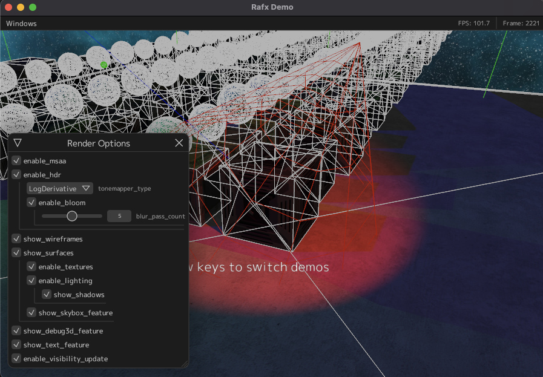 Demo with wireframes enabled
Rafx is a multi-backend renderer that optionally integrates with the distill asset pipeline.
This month, @dvd completed work on the new job system. It implements three steps: extract, prepare, and write. These jobs are now more structured, making them easier to implement while supporting concurrent execution and reducing dynamic allocation. They also integrate with a visibility system to ensure that off-screen objects are not processed.
@aclysma continued work on OpenGL ES 2.0/3.0 backends and documented implementation details of currently available rendering backends.
Additionally, some rendering features were improved and added: mesh rendering now uses an instance-rate vertex buffer instead of per-object uniforms, improving performance. Rendering features now support wireframe and untextured rendering modes. An egui render feature was added, and the demo now uses egui instead of imgui.
Bevy Retro
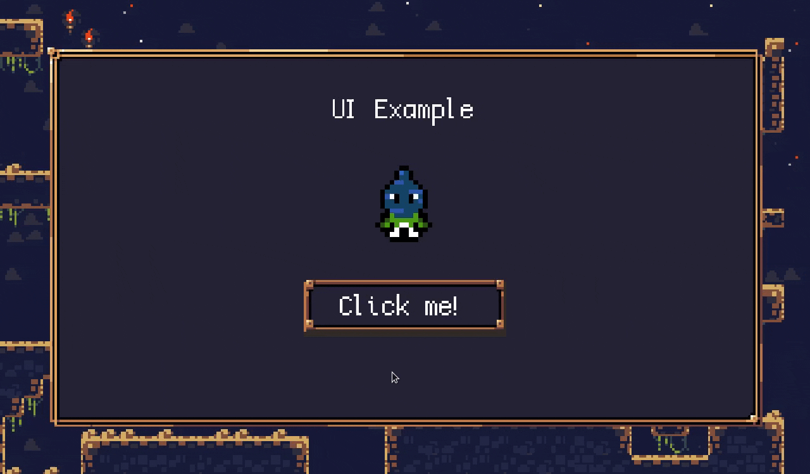 Bevy Retro UI example
Bevy Retro is a Bevy plugin designed for making pixel-perfect games as easily as possible.
This project was released under the Katharos License. This license has moral and ethical implications that you may or may not agree with, so please read it before making use of this project.
In the last two months, Bevy Retro has gained a few new features, the biggest of which is an integration with the RAUI UI library ( also featured in this newsletter ), allowing you to design a fully-fledged user interface for Bevy Retro games. Additional features added were:
- A simple sound playing API
- Text rendering for the BDF font format
- Custom render hook support allowing you to use raw Luminance API calls to render anything you want into the low-resolution framebuffer
You can ask questions or give feedback for Bevy Retro on GitHub.
Texture Generator
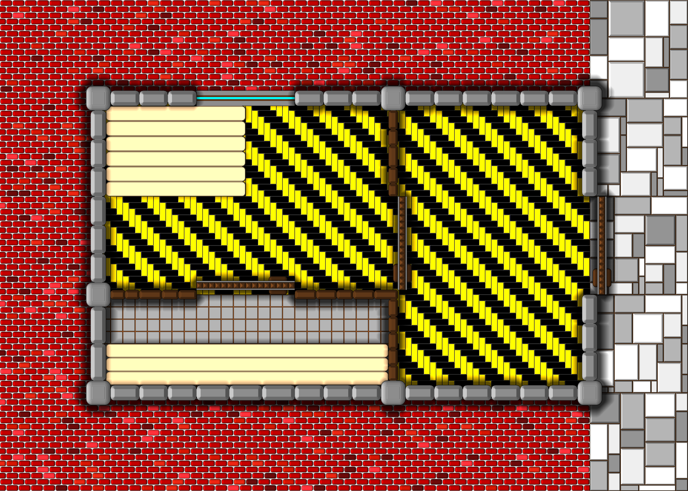 A preview to version 0.5 with furniture
Texture Generator by Orchaldir is a library to generate textures, and a library to use those textures to render tilemaps. Both libraries can generate color & depth images and support post-processing effects like lighting & ambient occlusion. For randomness, the instance id (e.g. the 145th brick) and/or the tile id are hashed.
The current release focuses on furniture.
bevy_asset_loader
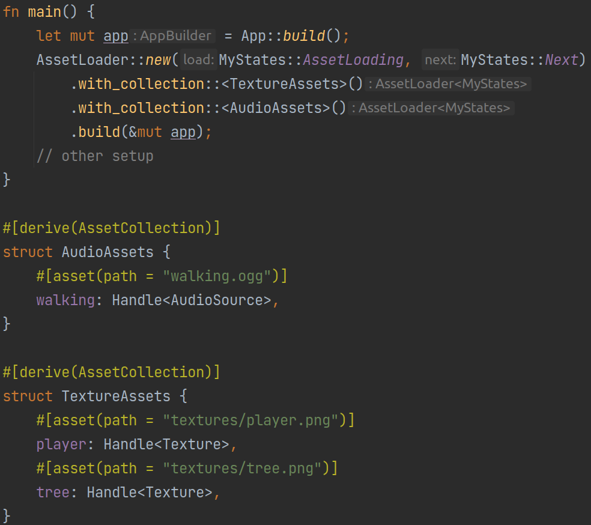
bevy_asset_loader by @nikl_me is a plugin for Bevy apps aiming to
improve a common pattern for asset-loading. The boilerplate required to load
assets during a "loading state" is reduced to a minimum. At the same time, the
plugin brings together the internal names of assets and their filepath, making
it easier to add new assets and to keep an overview over already existing ones.
The library introduces the AssetCollection trait that can be derived. Any
number of asset collections can be loaded by a single AssetLoader during a
configured app state. When all assets are loaded, the collections will be
inserted into Bevy's ECS as resources. Afterwards, the AssetLoader will
switch into a second configurable app state. At this point, your app can use
the asset collections that now contain loaded asset handles.
Currently, a single file always corresponds to one asset, and more complex
assets like e.g. TextureAtlas are not yet supported. There are plans to
extend the asset attribute to allow loading more complex assets. Stay tuned!
tobj
tobj by @Twinklebear and @virtualritz is a simple and lightweight
option for loading OBJ files. tobj was originally written inspired by
@syoyo's tinyobjloader, to provide a similar lightweight and easy to integrate
API for loading OBJ files in Rust.
While initially targeted at realtime rendering applications, tobj has gained
more advanced importer functionality required for offline rendering,
simulation, and modeling applications, through recent work by @virtualritz.
These features provide support for merging vertices to avoid discontinuities
in simulation packages and reordering vertices to allow omitting the
index buffer. These features have been added while preserving the original
lightweight API design goal of tobj, making it a useful crate for a range of
applications loading with OBJ files.
Libfive
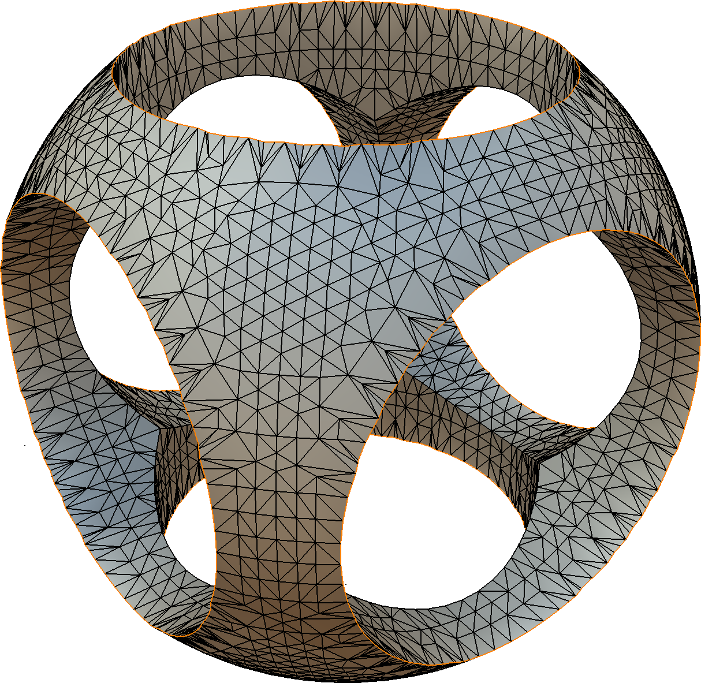
libfive by @virtualritz is a safe, oxidized wrapper around
Matt Keeter's libfive – a "library and set of
tools for solid modeling especially suited for parametric and procedural
design".
libfive is based on functional representation (f-rep). F-reps can be
evaluated as 3D meshes with aribitrary precision.
One could e.g. use this for a compact definition of a game's levels and mesh them adaptively, on the fly, during loading. With a density suitable for the machine/GPU running the game.
F-reps can also be sliced into polylines/vectors or bitmaps – e.g. for deriving level sets or for SLA/DLP 3D printing.
nvtx-rs
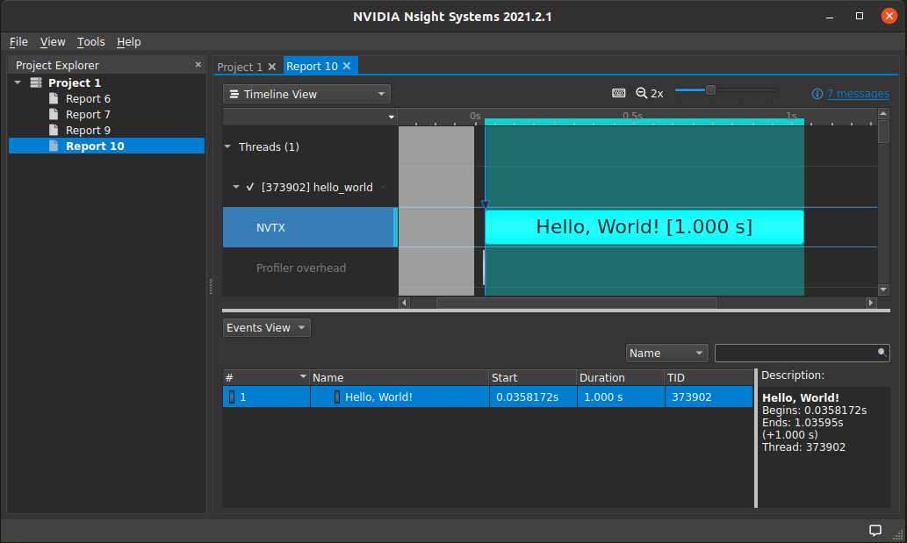 Watching the profile in NVIDIA NSight Systems
NVIDIA® Tools Extension SDK (NVTX) is a C-based API for annotating events, code ranges, and resources in your applications. nvtx-rs by @simbleau is a safe rust wrapper for it.
The intent is to safely wrap the NVTX library in rusty fashion to provide a proper cross-platform library for GPU and CPU profiling. Ideally this library would be used in benchmarking rust applications and performing research on rust projects such as a GPU analysis with zero-cost abstraction.
Requests for Contribution
- Backroll-rs, a new networking library.
- Embark's open issues (embark.rs).
- gfx-rs's "contributor-friendly" issues.
- luminance's "low hanging fruit" issues.
- ggez's "good first issue" issues.
- Veloren's "beginner" issues.
- Amethyst's "good first issue" issues.
- A/B Street's "good first issue" issues.
- Mun's "good first issue" issues.
- SIMple Mechanic's good first issues.
- Bevy's "good first issue" issues.
That's all news for today, thanks for reading!
Want something mentioned in the next newsletter? Send us a pull request.
Also, subscribe to @rust_gamedev on Twitter or /r/rust_gamedev subreddit if you want to receive fresh news!
Discuss this post on: /r/rust_gamedev, Twitter, Discord.